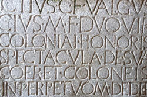

Delta: choosing an assignment topic

This short guide is not concerned with writing an essay or planning a lesson. It is about how to choose a topic for your assignment overall which allows three things to happen:
- Gives you enough scope to show a breadth of knowledge
- Gives you enough precision and limitation to show a depth of knowledge
- Allows you to select an aspect of the topic to focus on for a lesson
This is important because tutors and assessors often comment to
the effect that, for example:
The candidate's
choice of topic was too amorphous to allow for sensible analysis in
the essay
The candidate attempted too much in the lesson and overloaded
the learners as well as running out of time
This was a poor choice of topic which did not permit any real
depth of analysis
In trying to focus too tightly on a particular subskill, the
candidate was unable to set the skill in context
and so on.
What follows is an attempt to help you avoid such criticisms.
 |
The rules |
Cambridge have laid down some explicit rules for the teaching assignments in Module Two that you would be foolish to ignore. In the worst cases, having the wrong mix of assignment topics will mean that you cannot pass Module Two however well you write and however excellent is your teaching. Here's a run-down of the regulations:
- You must complete four Language Skills / Language Systems Assignments (hereafter LSAs).
- One of the assignments is wholly assessed by an external assessor appointed by Cambridge English Assessment and the other three (usually the first three) are internally assessed by your centre tutors or local mentors.
- Two assignment must focus on language skills and two on language systems.
- The two skills LSAs must be split between receptive (listening and reading) and productive (writing and speaking) skills. This means you must focus on listening or reading for one LSA and on speaking or writing for the other skills LSA.
- The two systems assignments must focus on different areas of
the systems of English: grammar, discourse, phonology, lexis.
(The four areas are not, of course, confined to their own watertight compartments and you will need to show that you are aware of how, for example, discourse affects pronunciation and meaning considerations affect syntactical choices. For more on the latter connection, see the guide to lexicogrammar, new tab.)
The implications |
Your choice of what to cover in LSA 1 will affect what you can do later.
- If you feel happy writing about and teaching lexis, for example, and you choose to do that for your first assignment, it means that you can't use that area for the externally assessed assignment (usually the last of the four).
- In the same way, if you focus on a receptive skill for one of your assignments, the second skills assignment will have to be on speaking or writing.
- If you do two systems assignments during your course, the externally assessed assignment must be on skills and, of course, vice versa.
It is important that you think about your choice for the topic of each assignment carefully.
 |
What is not allowed |
Centres vary slightly in how they interpret the regulations and some tutors are not wholly up to speed in this respect. It is up to you, therefore, to realise that what is not expressly allowed is forbidden. The following topic choices are, therefore, not acceptable so do not be tempted to start with anything like these as a title:
- Learner training
- Implementing a communicative (or any other) approach
- Using noticing
- Exploiting the Zone of Proximal Development
- Using drama
- Dictionary skills
- The interactive whiteboard
- Preparing for the First Certificate Examination
and so on.
All these titles and many more like them focus on methodology,
materials or technique / procedure and are unsuitable as a focus for
any LSA. You cannot, of course, ignore methodology, materials,
procedures or techniques but the place to discuss them is in section
4 of the background essay (teaching suggestions) and in the planning
of the lesson (where you also need to explain the rationale for your
choice of approach and lesson design in the commentary).
The Professional Development Assignment is also a place to flex your
methodological muscles, of course, and there are guides to the
various parts of that linked from the Delta index.
 |
Not too narrow, not too broad |
This is the critical issue.
If you choose a topic which is too narrow:
- you will be unable to show your knowledge of the big picture
- your essay will become an extended commentary on the lesson
- your discussion of learning issues and teaching suggestions will be too limited
- your topic will be a lesson aim, not background research
If, on the other hand, you choose a topic which is too broad:
- your analysis will be too shallow
- your identification of problematic issues for learners will be too generalised
- your teaching suggestions will be unfocused
- your planning will need to happen virtually from scratch because you won't have the data to draw on from your essay concerning the analysis in the plan and the rationale in the commentary
 |
Task: Here is a selection of (real) titles chosen by Delta-course participants. Decide what's wrong and what's right about them and then click on the You may like to consider some of the good ones for your own assignments. |
| Title | Comment |
| Helping
C1-level learners with variations for if in mixed
conditionals |
|
| Helping upper
intermediate students differentiate between used to
and would when expressing past habits |
|
| Helping
students with sentence stress and intonation |
|
| Helping
intermediate learners (B1/B2) with using comparative and
superlative adjectives appropriately |
|
| Helping
intermediate learners with multi word verbs |
|
| Helping C1
(CAE) learners to develop listening for specific
information. |
|
| Helping upper
intermediate students deal with unknown vocabulary |
|
| Helping B1
learners with turn-taking: interrupting politely and
signalling turn-taking opportunities |
|
| Helping higher
level learners use discourse markers when telling and
responding to stories |
|
| Helping
C1-level learners organise for/against and opinion-led
essays |
|
|  |
Set in stone |
The range of possible topics that you may decide to focus on for
your LSAs is very large but you should remember that the title of an
assignment is not set in stone. You can return to it as you do
the research and start to plan and write as often as you like.
For example, if you find that the title you invented fails to give
you enough scope to analyse broadly enough, you can extend the scope
in the title.
On the other hand, if you find that the title leads you to having
too much to analyse and comment on in terms of analysis, problems
for learners and teaching suggestions, you can revisit the title and
add some limitations (by level, aspect of the topic, skill use and
so on) and then remove the irrelevant.
The introductory paragraph of the essay is where you explain what
the title means and justify its choice with reference to your
experience and your reading and research.
Be prepared to re-write that paragraph as you
develop the discussion in the body of the essay.
You are in charge of the process until you hand in the completed
essay and plan.
 |
The essay and the lesson |
The lesson is part of the assignment overall so needs to focus on an aspect of the area you have chosen to research. The research area will be much wider than the focus of the lesson, naturally.
Purists might aver that you need first to settle on the overall
topic of the assignment and then design an appropriate and necessary
(for the learners) lesson which fits within it. That is not
necessary but it is a sensible way to approach an assignment.
On the other hand, you may have a lesson in mind which focuses on an area
of systems or skills that you recognise your learners need to learn
about or develop. If you have, you can work backwards from
there to the general title of the assignment in which the lesson can
be embedded.
Some examples may help:
- My learners need a lesson on the verb get used in a passive-voice structure
- so my assignment title will be
Helping B1 learners with the appropriate use of passive voice structures
and the essay will focus on how and why the passive voice is used and in particular on dynamic and stative passive structures in English. This will allow me to analyse the passive voice in English and refer to the ways other languages encode the meaning as well as identifying the main causes of problems for learners (see the guide to the passive on this site for more).
My lesson on the ability to use:
The car got damaged in the storm
The car was damaged by his brother
vs.:
The car was damaged so he didn't want to buy it
for example, will fit well inside that overall area. - I want to research the area of how English makes negative clauses because it interests me
- so I will research the area and, while doing so, look out
for particular aspects of use (transferred negation, assertive
and non-assertive forms etc.) which can form the aims and focus
of a 60-minute lesson in the area for my B2-level learners.
My assignment title will be
Helping B2 learners with negative formulations in English syntax
and the lesson itself will focus on sounding natural by using transferred negation in English to express opinion as in:
I don't expect he's going to come
instead of
I expect he won't come. - My learners have asked for more speaking practice because they feel they have trouble making small talk with native speakers
- so, I want to do a lesson on how to manipulate IRF sequences
by making sure that each Response turn also includes an
Initiation to keep the ball rolling in interactions. My
assignment title will be
Helping B1 learners recognise and use Initiation-Response-Follow-up sequences naturally
and the lesson on the four main types of Initiation which can be included in Response turns will fit neatly within that overall picture. - I have learners who need to access academic texts but this is a huge area
- so, for an assignment, I will narrow my focus to either
Helping C1 learners decode and produce complex nominalisation in academic writing
or
Helping C1 learners identify and express angle and viewpoint through modal expressions in academic writing
Then I can plan a lesson on just one aspect of the skills / systems such as nominalised subject noun phrases or understanding the use of epistemic modal auxiliary verb forms in a piece of academic writing.
It is nowhere written that you have to proceed from topic area to lesson or vice versa. It all depends on your setting, your knowledge and your needs (as well, of course, as those of your learners).
 |
Things to avoid |
There are a number of ways to get the focus of an assignment wrong and if you do that, the lesson and the assignment will not fit together properly or it will be inappropriate.
- Starting from the identification of a topic you know about.
Just because you happen to know rather a lot about teaching reading or the tense structures of English does not mean that these are suitable topics for an assignment. They may be but it does not always follow logically that they are. If you do this, you may be in danger of:- writing an essay in which you fail to do enough research because you are depending on your memory of the topic and setting out what you already know
- teaching a lesson which is inappropriate because you have started from your concerns, not those of your learners
- Starting by wanting to teach a lesson you are familiar with
and which always seems to be successful (whatever you mean by
that). Such a lesson may be appropriate for your
learners but you run the risk of:
- shoehorning your lesson topic into the essay and focusing too narrowly on its concerns
- teaching a lesson which is driven by activities which are engaging rather than those which help to develop your learners' knowledge, skills and communicative abilities
- over- or under-challenging your learners (there is no one-size-fits-all lesson plan)
- Starting from a focus which is neither a proper system nor a
skill such as the multiple meanings of get or the
problems learners have with so and such.
If you do this, you run the risks of:
- producing a scatter-shot essay which covers lots of unconnected issues to do with the item(s) you have in mind
- being unable to focus either in the essay or the lesson plan on something which is consistent and logically connected
- teaching a lesson which has only tangential appropriateness for the learners
 |
Get started |
Now you can sit down with a blank sheet of paper and decide on
the topic of your assignment.
Write out the title you have in mind and then make sure that:
- You have clearly indicated the general area of concern and the focus in the title
- You have narrowed the scope by level, subskill, systems area or setting
| Once you have done that, there are four guides to consider: | |
| How to write a background essay | for the general guide to writing Delta essays |
| Writing your first Delta essay | for the guide to how to approach assignment 1 |
| Meeting the essay criteria | for the guide to how to meet all the writing criteria at least above pass level |
| the essay marking criteria | for a PDF document explaining what the criteria are and what they mean |
all those links open in new tabs.